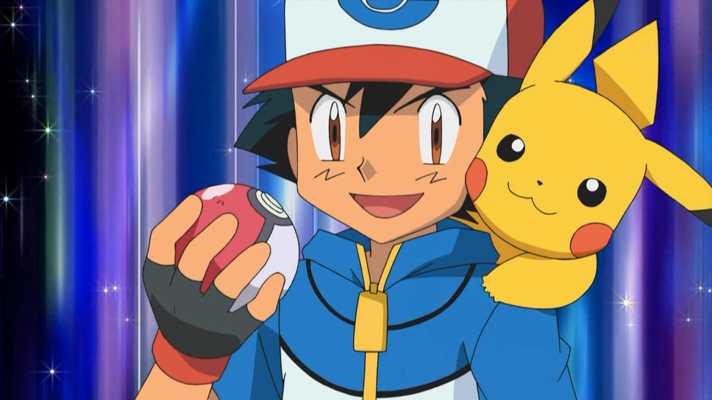
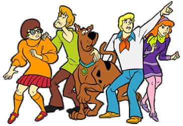
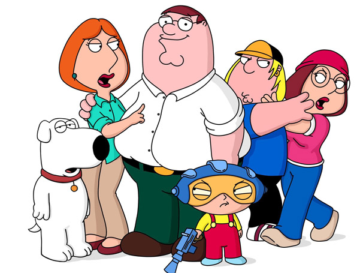
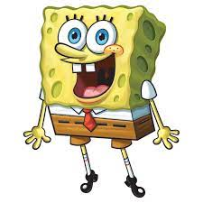
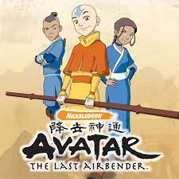

<html>
    <head>
        <link rel="stylesheet" href="estilo2.css">
    </head>
</html>
    <head>
        <body>
            <h1> <strong>10 de desenho animado</strong> </h1>
           <hr><!--linha-->
           <h2>pipa pau</h2>
           <p>O pássaro azul e vermelho nasceu de um improviso para poupar grana. Em 1940, Lantz e sua equipe de roteiristas e cartunistas trabalhavam em mais um episódio de Andy Panda – na época, o maior sucesso d... 

            Leia mais em: https://super.abril.com.br/especiais/pica-pau-80-anos/</p>
            <iframe width="500" height="300" src="https://www.youtube.com/embed/mcjNoxRciKU?si=Lat2bOfKopgoixOQ" title="YouTube video player" frameborder="0" allow="accelerometer; autoplay; clipboard-write; encrypted-media; gyroscope; picture-in-picture; web-share" allowfullscreen></iframe>
            <hr><!--linha-->
            <h2>super choque</h2>
            <p>Sinopse Super Choque acompanha o jovem Virgil Hawkins, que ganha poderes eletromagnéticos após um incidente em que foi exposto a um estranho gás. Agora com a ajuda do seu melhor amigo Osgood, ele assume o manto de Super Choque e oferece ajuda aos que precisam dela, além de enfrentar diversos vilões.</p>
            <iframe width="500" height="300" src="https://www.youtube.com/embed/cmCRyIxBE3s?si=6SUa8cMJE_fkeEWs" title="YouTube video player" frameborder="0" allow="accelerometer; autoplay; clipboard-write; encrypted-media; gyroscope; picture-in-picture; web-share" allowfullscreen></iframe>
            <hr><!--linha-->
            <h2>ben10</h2>
            <p>Benjamin Kirby Tennyson (Ben) é um garoto de 10 anos, que está sempre tentando ter aventuras alienígenas antes de suas férias terminarem. No dia das férias não gostou da ideia da sua prima Gwen passar o verão junto com ele e seu Avô Max. Quando achou o relógio chamado Omnitrix, não conhecia o nome.</p>
            <iframe width="500" height="300" src="https://www.youtube.com/embed/RX55xIokRwg?si=-f7hDpVOFDPd17pI" title="YouTube video player" frameborder="0" allow="accelerometer; autoplay; clipboard-write; encrypted-media; gyroscope; picture-in-picture; web-share" allowfullscreen></iframe>
            <hr><!--limha-->
            <h2>Os Cavaleiros do Zodíaco</h2>
            <p>Outra produção saída dos mangás japoneses, Os Cavaleiros do Zodíaco foi um desenho animado muito importante, um verdadeiro fenômeno ao longo dos anos 90.

                No embalo de seriados de origem nipônica, como Jaspion, a animação que misturava diferentes mitologias entrou no imaginário e na cultura popular. Produtos de merchandising, bonecos, novas adaptações e um séquito de fãs fazem da produção o 13º lugar.</p>
            <iframe width="500" height="300" src="https://www.youtube.com/embed/d8hoX-HnFiE?si=Z6Odbvuqts2ZlCBC" title="YouTube video player" frameborder="0" allow="accelerometer; autoplay; clipboard-write; encrypted-media; gyroscope; picture-in-picture; web-share" allowfullscreen></iframe>
            <hr><!--linha-->
            <h2>Pokémon</h2>
            <p>Podemos dizer que muitos animes não existiriam sem Pokémon. Pikachu e Ash entraram para a história com suas batalhas épicas. O fenômeno foi tão grandioso que seguiu os passos de produções como Os Cavaleiros do Zodíaco.

                Filmes, bonecos e vários produtos se juntaram a Pokémon GO – um app que dominou o mundo por meses. Literalmente!</p>
            <iframe width="500" height="300" src="https://www.youtube.com/embed/xtkcVp43Df4?si=CEuyJ3Ba7Vf7v3Jk" title="YouTube video player" frameborder="0" allow="accelerometer; autoplay; clipboard-write; encrypted-media; gyroscope; picture-in-picture; web-share" allowfullscreen></iframe>
            <hr><!--linha-->
            <h2>South Park</h2>
            <p>São 25 temporadas no ar. Poucos desenhos animados podem se gabar desse feito. Menos ainda se levarmos em consideração como South Park mantém sua relevância ao longo dos anos.

                São inúmeros episódios que satirizam a sociedade (e não só a norte-americana), fazem paródias da cultura pop e usam e abusam de humor escatológico, muitas vezes tudo misturado no mesmo episódio.</p>
            <iframe width="500" height="300" src="https://www.youtube.com/embed/xRt1a-TMxcI?si=3l0_20SfNWMwfnRs" title="YouTube video player" frameborder="0" allow="accelerometer; autoplay; clipboard-write; encrypted-media; gyroscope; picture-in-picture; web-share" allowfullscreen></iframe>
            <hr><!--linha-->
            <h2>Scooby-Doo, Cadê Você?</h2>
            <p>Foram apenas dois anos no ar, mas Scooby-Doo, Cadê Você? fez o necessário para entrar para a cultura pop. Com um humor peculiar, garantiu o décimo lugar dos melhores desenhos animados de todos os tempos.

                Seus episódios mostravam um grupo de jovens que perseguiam fantasmas, revelavam golpistas e impediam que crimes fossem cometidos, tudo sempre acompanhados do cão Scooby Doo.</p>
            <iframe width="500" height="300" src="https://www.youtube.com/embed/K5OaMRiMcQk?si=RbD5HH8trcQlrcg3" title="YouTube video player" frameborder="0" allow="accelerometer; autoplay; clipboard-write; encrypted-media; gyroscope; picture-in-picture; web-share" allowfullscreen></iframe>
            <hr><!--limha-->
            <h2>Uma Família da Pesada</h2>
            <p>Uma Família da Pesada não ficaria 21 temporadas no ar se não fosse um desenho animado incrível. Nada mal para um programa que estreou após o Super Bowl de 1999.A animação criada por Seth MacFarlane também entrou para a cultura popular, acompanhando uma família super disfuncional e suas desventuras malucas. Recheada de referências à cultura pop, ganhou a admiração de jovens e adultos.</p>
            <iframe width="500" height="300" src="https://www.youtube.com/embed/XwvvjigF6BU?si=fFe8m414F2cpB0wX" title="YouTube video player" frameborder="0" allow="accelerometer; autoplay; clipboard-write; encrypted-media; gyroscope; picture-in-picture; web-share" allowfullscreen></iframe>
            <hr><!--limha-->
            <h2>Bob Esponja Calça Quadrada</h2>
            <p>Bob Esponja Calça Quadrada é daqueles desenhos animados que são admirados por pessoas de diferentes gerações. Recheada de humor nonsense, a animação segue o dia a dia do tolo Bob Esponja e seus amigos, que residem na cidade marítima da Fenda do Biquíni.

                Sem qualquer pretensão de soar factível com a vida marinha, é divertido pelas piadas que faz com a vida cotidiana, como a dificuldade de conviver com vizinhos ou colegas de trabalho.</p>
            <iframe width="500" height="300" src="https://www.youtube.com/embed/5_yVVr9Wimo?si=A4_S2qH_NCv2e-Yw" title="YouTube video player" frameborder="0" allow="accelerometer; autoplay; clipboard-write; encrypted-media; gyroscope; picture-in-picture; web-share" allowfullscreen></iframe>
            <hr><!--limha-->
            <h2>Avatar: A Lenda de Aang</h2>
            <P>O 7º lugar de melhor desenho de todos os tempos é de um original da Nickelodeon: Avatar: A Lenda de Aang. No ar ao longo de três temporadas, atraiu muita atenção por mostrar um mundo de fantasia cuidadosamente elaborado com base na cultura oriental.

                Em uma indústria dominada por produções asiáticas, Avatar foi eficaz em emular muitos elementos dos animes japoneses. O sucesso perdura até os dias de hoje, contando, inclusive, com um filme dirigido por M. Night Shyamalan.</P>
            <iframe width="500" height="300" src="https://www.youtube.com/embed/QZoN1p8rKf0?si=f3noJm4AHQGjaeop" title="YouTube video player" frameborder="0" allow="accelerometer; autoplay; clipboard-write; encrypted-media; gyroscope; picture-in-picture; web-share" allowfullscreen></iframe>
            <hr><!--linha-->